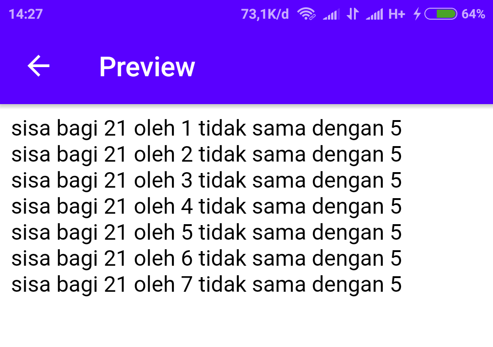
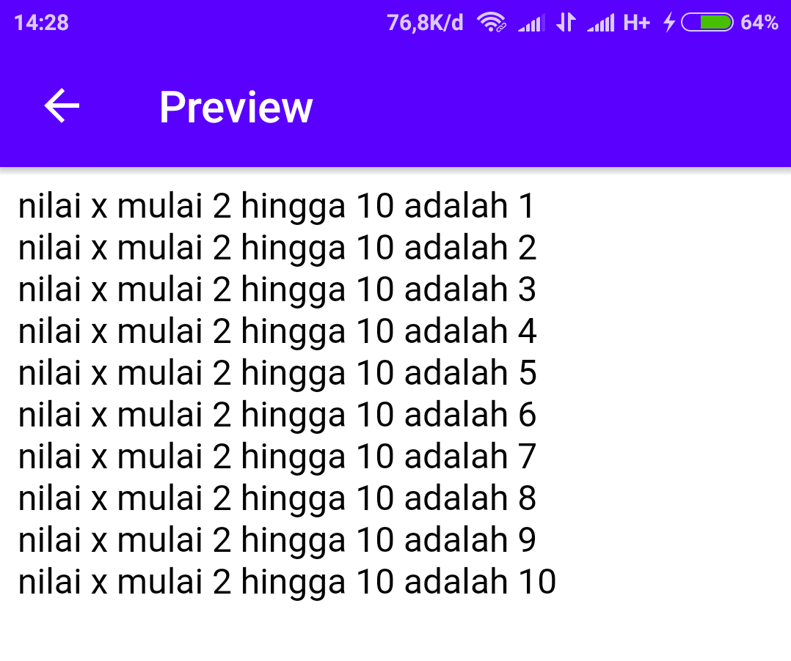
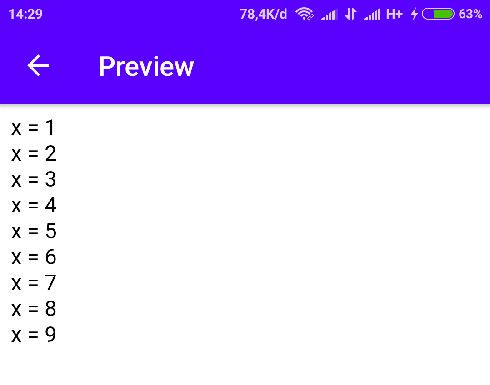
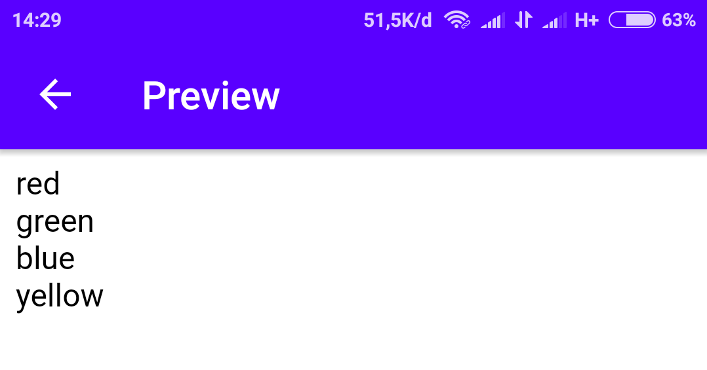

Loop atau pengulangan dalam PHP bisa menggunakan code berikut:
- While
- Do ... While
- For
- Foreach
While
Pengulangan while digunakan jika kita tidak tau pasti berapa kali pengulangan untuk mendapatkan kondisi true.
Contoh:
<?php
$x = 1;
while(21 % $x != 5){
echo "sisa bagi 21 oleh ".$x." tidak sama dengan 5 <br>";
$x++;
}
?>
Hasilnya:

Keterangan:
Proses akan terus berjalan sampai menemukan hasil 21 % $x = 5
Do .. While
Pengulangan dengan do ... while digunakan jika kita tidak tau pasti berapa kali pengulangan untuk mendapatkan kondisi true dan selalu menjalankan kondisi pertama.
Contoh:
<?php
$x = 1;
do{
echo "nilai x mulai 2 hingga 10 adalah ".$x." <br>";
$x++;
}while( $x >= 2 && $x<=10);
?>
Hasilnya:

Keterangan:
1 lebih kecil dari 2, tetapi tetap masuk dalam pengulangan. Karena x = 1 merupakan kondisi pertama dan akan selalu dijalankan.
For
Pengulangan for digunakan jika kita sudah tau pasti batas-batas pengulangannya.
Contoh:
<?php
for($x=1; $x<10; $x++){
echo "x = ".$x." <br>";
}
?>
Hasilnya:

Foreach
Pengulangan untuk array.
Contoh:
<?php
$colors = array("red", "green", "blue", "yellow");
foreach ($colors as $value) {
echo "$value <br>";
}
?>
Hasilnya:
